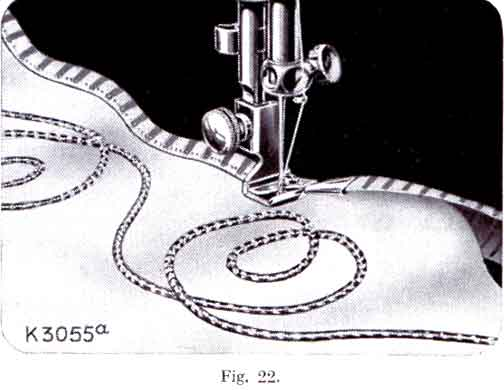
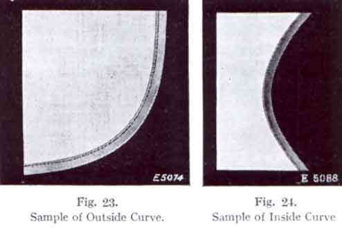
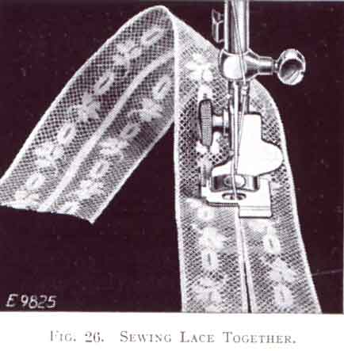
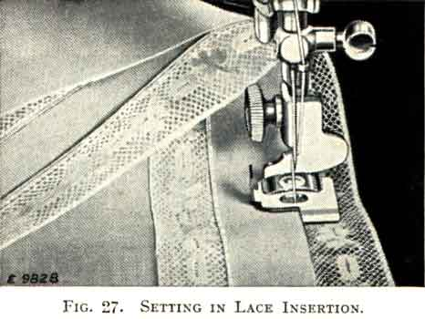
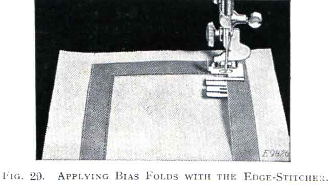
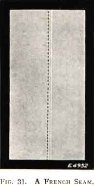
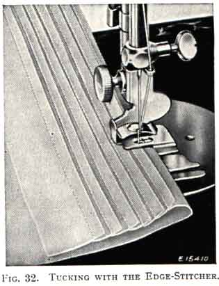

THE NEEDLEBAR
Online Manuals Section
NOTE -- Before applying any of these attachments raise the needle and remove the presser foot. After substituting the attachment turn the balance wheel slowly over towards you to make sure that the needle passes through the centre of the needle hole.
Pass the binding through the scroll of the binder and draw it under the needle.

Place the edge of the material to be bound between the scroll of the binder and under the needle, lower the presser-bar lifter ans sew as usual. Bias binding should be cut 15/16 of an inch wide.
To Bind with Dress Braid -- Proceed as when using bias binding; but as dress braid and binding purchased already folded are narrower than bias binding they should be inserted in the outer slot of the binder. The edges of dress braid are not turned under as in the case of bias binding.
To make French Folds -- Proceed as directed for binding, but pass the cloth beneath the binder-foot, so that the fold is stitched on to the face of the material instead of on the edge.
The edge to be bound should be held well within the centre slot of the scroll, and with a little practice this is quite easy. If the material is allowed to slip away form the scroll when near the needle, the edge will not be caught in the binding.
Various materials and conditions require different adjustments of the Binder to bring the stitching close to the edge. A wider adjustment of the Binder is necessary when binding curves than when binding a straight edge.
To adjust the Binder, loosen its small screw and move the scroll to the right for a narrower adjustment, or to the left for a wider adjustment, after which securely tighten the screw. To become perfectly familiar with the adjustment of the Binder, a little practice is necessary.
Practice is required to bind a curved edge properly. The edge to be bound must be allowed to pass freely through the scroll and should not be crowded in or against it. Guiding should be from the back of the binder and to the left, allowing unfinished edges to swing naturally into the scroll of the binder.

Never pull the binding as it feeds through the Binder, as bias material is very easily stretched and would be too narrow when it reaches the needle. If this occurs the edges will not be turned.
When binding a curved edge, turn the material only as fast as the machines sews. It is not possible to hold the material in the entire length of the scroll when binding a small curve.
Do not push the material in too fast, as the edge will then become puckered, and do not stretch the material or the curve will not be the proper shape when finished. If the stitching does not catch the edge of the binding the scroll should be adjusted a little to the left.
This curve is found on nearly all garments which are finished with a bound edge, but practice is necessary on various materials.
When binding an inside curve, straighten out the edge as it is being fed into the Binder. When doing this, take care not to stretch the edge of the material.
If the material is soft, like batiste or crepe de chine, add a row of machine stitching close to the edge of the curve before binding.
This attachment is an indispensable aid whenever stitching must be kept accurately on the extreme edge of the material. The slots numbered 1 to 5 in Fig. 25 serve as guides for sewing together laces, inserions and embroideries, sewing in position hemmed or folded edges, piping or sewing flat braid to a garment.
The distance of the line of stitching from the edge of the material in the slots can be regulated by pushing the lug (A) to the right or left. If it moves hard, put a drop of oil under the blue spring, then wipe it dry.
-
It is difficult to sew two lace edges together even after basting, but the edge-stitcher makes it possible to stitch on the very edge.

Place one edge in slot 1 and th other in slot 4, and adjust lug (A) until both edges are caught by the stitching. Hold the two pieces slightly overlapped to keep them against the ends of the slots. The thread tensions should be loose to avoid puckering of fine lace.

Lace and ribbon or other insertions can be set in by using the same slots (1 and 4). The material may be folded over before placing it in the slot so that a double thickness is stitched and will not pull out. The surplus material is trimmed away close to the stitching as shown in Fig. 27.
Piping is very attractive if the correct contrasting colour is chosen for the piping material. Place the piping, with its finished edge to the left, in slot 3. Place the edge to be piped in slot 4, as shown in Fig. 28.
Piping should preferably be cut bias, and should be cut to twice the width of the slot (3) in the edge-stitcher so that it can be folded once.
Folded bias tape or military braid, used for neat and colourful trimming, may be sewn on by placing the garment under the edge-stitcher, the same as under a presser foot, and placing the tape in slot 1 or 4. To make a square corner, sew until the turning point is reached, then remove the tape from the attachment and form the corner by hand, replace it in the slot and continue stitching, as shown in Fig. 29. To space two or more parallel rows, a guide line such as a crease, chalk mark or basting thread should be used.

-
A wide hem on sheets, pillow slips, etc., may be attached evenly with the edge-stitcher after the hem has been measured and the edge turned. Insert the dge in slot 5 as shown in Fig. 30 and adjust to stitch as close to the edge as desired.
-
An even French seam may be made by inserting the two edges to be joined, wrong sides together, in slot 1 or 2 and stitching close to the edge; then folding both right sides together and inserting the back of the seam into slot 1 again and stitching with enough margin to conceal the raw edges. See Fig. 31.
-
Dainty narrow tucking may be produced on the edge-stitcher by inserting creased folds in slot 1 as shown in Fig. 32, and adjusting the edge-stitcher to right oleft for the desired width of tuck, up to 1/8 inch. Successive tucks may be easily creased by folding the material at the desired distance from the previous tuck, and then running the length of the fold over a straight edge such as the edge of the sewing machine cabinet. The secret of good tucking lies in a light tension, short stitch, and fine thread and needle.
